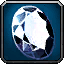
I recommend trying Zygor's 1-80 Leveling Guide if you are still leveling your character or you just started a new alt. The guide will help you to reach level 80 a lot faster.
Shopping List
This is the list of the approximate materials required to level Jewelcrafting up to 450.
Classic (1-300)
- 110x Copper Bar
- 15x Tigerseye or 15x Malachite
- 120 Bronze Bar - 60 Copper Bar + 60 Tin Bar if you have Mining.
- 20x
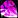
Shadowgem - 40x Shadowgem or 25 Small Lustrous Pearl or 40 Silver Bar. You can get a few from each. You don't have to choose one of them only.
- 80x
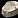
Heavy Stone - 30x Moss Agate or 66x Lesser Moonstone (a combination of both can work too)
- 142x Mithril Bar
- 90x Solid Stone
- 28x Truesilver Bar or 25x Citrine
- 35x Aquamarine
- 40x
 Flask of Mojo
Flask of Mojo - 56x
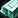
Thorium Bar - 10x Star Ruby
- 21x Large Opal
- 20x Azerothian Diamond
- 10x Huge Emerald
TBC (300-350)
- Buy around 40 in total from any of these:
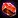
Blood Garnet,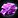
Shadow Draenite, Golden Draenite, Deep Peridot,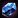
Azure Moonstone, Flame Spessarite. You probably shouldn't buy only one type of gem since there are parts where you can use multiple different recipes. - Buy 15 more Shadow Draenite or Golden Draenite
- 48x Adamantite Powder - You can get 48 Adamantite Powder by prospecting 240 Adamantite Ore.
- 12x Primal Earth
- 12x Adamantite Bar
WotLK (350-450)
- Buy around 60 from the following gems: Bloodstone, Chalcedony, Dark Jade, Huge Citrine, Shadow Crystal, Sun Crystal (don't have to be the same color)
- Another 5x from one of these: Bloodstone, Chalcedony, Huge Citrine, Sun Crystal
- 10x Crystallized Earth
- 46x
 Eternal Earth OR 23x Eternal Earth and 23x
Eternal Earth OR 23x Eternal Earth and 23x  Eternal Shadow
Eternal Shadow - The 420-450 part is not included here.
If you have Mining and want to farm the ores for prospecting, please see my farming guides:
Copper Ore farming Tin Ore farming Iron Ore farming 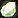
Prospecting
Once you reach Jewelcrafting 20, you can learn the Prospecting ability from your trainer. This will allow you to convert 5 raw ores into gems. For information on prospecting yield from each ore, please see my separate guide:
Prospecting Table for WotLK Classic
Jewelcrafting trainers
You can learn Jewelcrafting from any of these NPCs below. Just click on any of these links below to see the trainer's exact location. You can also walk up to a guard in any city and ask where the Jewelcrafting trainer is, then the trainer will be marked with a red flag on your map.
Classic (1-300)
WotLK Classic Trainers (300-450)
You can learn the new WotLK Classic Jewelcrafting skill from these NPCS:
Horde:
 Carter Tiffens in Howling Fjord
Carter Tiffens in Howling Fjord- Geba'li in Borean Tundra
Alliance:
Both factions can also learn it from Timothy Jones at Dalaran.
Leveling WotLK Jewelcrafting (1-50)
Draenei characters have +5 Jewelcrafting skills because of their passive Gemcutting. An extra 5 Jewelcrafting skill means recipes stay orange for 5 more points, so you can save a lot of gold by doing lower level recipes for 10 more points.
1 - 35
Buy a Jeweler's Kit from the Jewelcrafting Supplies vendor near your trainer or General/Trade Goods vendors.
55x Delicate Copper Wire - 110 Copper Bar
Keep these because you will need them later. But you can stop making them when you reach 35 and only make more if you need it.
35 - 50
15x Tigerseye Band - 15 Tigerseye, 15 Delicate Copper Wire
You can also make 15x Malachite Pendant.
Journeyman Jewelcrafting (50-150)
Visit your trainer and learn Journeyman Jewelcrafting. (Requires level 10)
50 - 80
50x Bronze Setting - 100 Bronze Bar
Save these. You will need some of them later.
80 - 100
20x Gloom Band - 20 Bronze Setting, 40 Shadowgem, 40 Delicate Copper Wire
Alternative recipes:
- 25x Simple Pearl Ring - 25 Small Lustrous Pearl, 25 Bronze Setting, 50 Copper Bar
- 20x Ring of Silver Might - 40 Silver Bar
100 - 110
10x Ring of Twilight Shadows - 20 Shadowgem, 20 Bronze Bar
You can also continue to make Ring of Silver Might, or you can switch to Heavy Jade Ring at 105 if you have some Jade.
110 - 120
10x Heavy Stone Statue - 80 Heavy Stone
If Heavy Stone is cheap, then you can make this one up to 130. However, if it's actually really expensive, then you can keep making Heavy Jade Ring and Ring of Twilight Shadows.
120 - 150
30x Pendant of the Agate Shield - 30 Moss Agate, 30 Bronze Settings
The recipe is sold by  Jandia in Thousand Needles at Freewind Post and by
Jandia in Thousand Needles at Freewind Post and by  Neal Allen in Wetlands at Menethil Harbor. It's a limited-supply recipe, so you must wait for it to respawn if someone bought it before you. I don't know the exact respawn timer, but it's not that long (5-10 minutes). You can also buy it from the Auction House if you don't want to camp the NPC.
Neal Allen in Wetlands at Menethil Harbor. It's a limited-supply recipe, so you must wait for it to respawn if someone bought it before you. I don't know the exact respawn timer, but it's not that long (5-10 minutes). You can also buy it from the Auction House if you don't want to camp the NPC.
Alternative recipes:
Make Amulet of the Moon if 2x Lesser Moonstone is cheaper than one Moss Agate. But this recipe turns yellow at 140, so you might need to make more than 30 of these.
If you prospected your ores, you probably have both gems, so you should make Amulet of the Moon first because it turns yellow sooner, then switch to Pendant of the Agate Shield at around 140.
The  Design: Amulet of the Moon is sold by these NPCs. This is also a limited supply recipe, so you must wait for it to respawn if someone bought it before you. I don't know the exact respawn timer, but it's not that long (5-10 minutes)
Design: Amulet of the Moon is sold by these NPCs. This is also a limited supply recipe, so you must wait for it to respawn if someone bought it before you. I don't know the exact respawn timer, but it's not that long (5-10 minutes)
Alternatives if players camp the vendors:
Many players on high-population realms may camp these patterns at the start of the expansion and try to sell them for a lot of gold. (The re-stock time is only 5-10 minutes as far as I know). You can use these alternative recipes below.
- 120 - 136
16x Heavy Jade Ring - 16 Jade, 16 Bronze Setting, 32 Iron Bar
- 136 - 150
14x Golden Dragon Ring - 14 Jade, 28 Gold Bar, 28 Delicate Copper Wire
Expert Jewelcrafting (150-225)
Visit your trainer and learn Expert Jewelcrafting. (Requires level 20)
150 - 180
40x Mithril Filigree - 80 Mithril Bar
Keep these. You will need some of them later. (you might need more depending on which recipes you make)
This recipe will be yellow for the last few points, so you probably won't end at exactly 180, but that doesn't matter. You can still go to the next step after making around 40 of these.
180 - 185
9x Solid Stone Statue - 90 Solid Stone
If you can get cheap Solid Stones, then you could make this one up to 190.
Alternative recipes:
Make a few Blazing Citrine Ring if you have some Citrine left from prospecting.
The  Design: Blazing Citrine Ring is sold by
Design: Blazing Citrine Ring is sold by  Kireena in Desolace and by
Kireena in Desolace and by  Micha Yance in Hillsbrad. It's a limited supply recipe, so you must wait for it to respawn if someone bought it before you. I don't know the exact respawn timer, but it's not that long (5-10 minutes). But you can also buy it from the Auction House if you don't want to camp the NPC.
Micha Yance in Hillsbrad. It's a limited supply recipe, so you must wait for it to respawn if someone bought it before you. I don't know the exact respawn timer, but it's not that long (5-10 minutes). But you can also buy it from the Auction House if you don't want to camp the NPC.
185 - 210
28x Engraved Truesilver Ring - 28 Truesilver Bar, 56 Mithril Filigree
This recipe will be yellow for the last few points, so you might have to make a few more.
Alternative recipes:
25x Citrine Ring of Rapid Healing - 25 Citrine, 50 Mithril Bar
210 - 220
10x Aquamarine Signet - 30 Aquamarine, 40 Flask of Mojo
 Flask of Mojo drops from most level 40-47 Trolls. You can farm them inside/outside Zul'Farrak, troll camps in Hinterlands, and the level 39+ troll camp in Stranglethorn Vale.
Flask of Mojo drops from most level 40-47 Trolls. You can farm them inside/outside Zul'Farrak, troll camps in Hinterlands, and the level 39+ troll camp in Stranglethorn Vale.
220 - 225
5x Aquamarine Pendant of the Warrior - 5 Aquamarine, 15 Mithril Filigree
Artisan Jewelcrafting (225-300)
Visit your trainer and learn Artisan Jewelcrafting. (Requires level 35)
225 - 250
56x Thorium Setting - 56 Thorium Bar
Stop making these at 250 and only make more if you need them. (you will need around 56)
250 - 260
10x Ruby Pendant of Fire - 10 Star Ruby, 10 Thorium Setting
260 - 281
21x Simple Opal Ring - 21 Large Opal, 21 Thorium Setting
If you have a lot of Azerothian Diamond left, or if it's cheaper than Large Opal, then you can start crafting Diamond Focus Ring when you reach 265. But make sure to keep at least 20x Azerothian Diamond for the next step.
Alternative recipe:
If Azerothian Diamond and Large Opal cost around twice as much as one Star Ruby, then you should continue making Ruby Pendant of Fire up to 275.
281 - 295
20x Diamond Focus Ring - 20 Azerothian Diamond, 20 Thorium Setting
295 - 300
5x Emerald Lion Ring - 10 Huge Emerald, 5 Thorium Setting
Alternatives recipes:
- 5x Onslaught Ring - 5 Thorium Setting, 5 Powerful Mojo, 5 Essence of Earth
- 5x Sapphire Pendant of Winter Night - 5 Blue Sapphire, 5 Essence of Undeath, 5 Thorium Setting
- 7x Glowing Thorium Band - 14 Azerothian Diamond, 7 Thorium Setting
Master Jewelcrafting (300-350)
You can learn the Master Jewelcrafting skill from Kirembri Silvermane and Nemiha in Shattrath City or  Kalaen and
Kalaen and  Tatiana in Hellfire Peninsula. (Requires level 50)
Tatiana in Hellfire Peninsula. (Requires level 50)
300 - 320
Cut around 30 from one of these gems:
- Brilliant Golden Draenite - 1x Golden Draenite
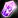
Glowing Shadow Draenite - 1x Shadow Draenite- Inscribed Flame Spessarite - 1x Flame Spessarite
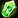
Radiant Deep Peridot - 1x Deep Peridot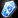
Solid Azure Moonstone - 1x Azure Moonstone- Teardrop Blood Garnet - 1x Blood Garnet
If you can find cheap Black Diamonds at the Auction House, you can craft Prismatic Black Diamonds to level Jewelcrafting up to 315 or 325.
320 - 325
Make around 5-7 from one of these:
- Glinting Flame Spessarite - 1x Flame Spessarite
- Bright Blood Garnet - 1x Blood Garnet
- Jagged Deep Peridot - 1x Deep Peridot
- Sparkling Azure Moonstone - 1x Azure Moonstone
325 - 335
12x Mercurial Adamantite - 48 Adamantite Powder (prospect 240 Adamantite Ore), 12 Primal Earth
Save the 12x Mercurial Adamantite. You will need them at 340.
You can go to the next part even if you didn't reach 335, but you will have to make a few more gems.
335 - 340
Make 5-10 from any of the following gems.
- Potent Flame Spessarite - Sold by Nakodu. Requires Friendly Lower City reputation.
- Sovereign Shadow Draenite
- Smooth Golden Draenite
340 - 350
12x Heavy Adamantite Ring - 12 Adamantite Bar, 12 Mercurial Adamantite
You can continue to make the gems above if you didn't reach 350, or you can make a few more rings.
WotLK Classic Jewelcrafting (350-450)
You can learn the new WotLK Classic Jewelcrafting skill from these trainers below. (Requires level 65)
Horde:
- Carter Tiffens in Howling Fjord
- Geba'li in Borean Tundra
Alliance:
Both factions can also learn it from Timothy Jones at Dalaran.
350 - 395
There are like 50 new gem recipes you can learn from your trainer, so it would be hard to list all of them here. Go to your trainer, learn one from each color, or just one color if you have a lot of gems from one color.
Buy around 60 from the following gems: Bloodstone, Chalcedony, Dark Jade, Huge Citrine, Shadow Crystal, Sun Crystal (don't have to be the same color)
Make around 60x uncommon gems until you reach 395.
395 - 400
Make 5 from any of the following:
- 5 x Bloodstone Band - 5 Bloodstone, 10 Crystallized Earth
- 5 x Crystal Chalcedony Amulet - 5 Chalcedony, 10 Crystallized Earth
- 5 x Crystal Citrine Necklace - 5 Huge Citrine, 10 Crystallized Earth
- 5 x Sun Rock Ring - 5 Sun Crystal, 10 Crystallized Earth
These are all yellow recipes, so you might have to make more than 5.
400 - 420
Make around 23 from one of the following:
- 23 x Stoneguard Band - 46 Eternal Earth
- 23 x Shadowmight Ring - 23 Eternal Earth, 23 Eternal Shadow
You might have to make more than 23.
Jewelcrafting Daily Quests in WotLK
Each day, the Jewelcrafting trainer Timothy Jones in Dalaran will offer a new quest to retrieve a quest item from a specific set of mobs in Northrend. The reward for completing these quests is a single Dalaran Jewelcrafter's Token.
Almost all BoP gems, rare cuts, epic cuts, designs for necklaces and rings are purchased with Dalaran Jewelcrafter's Token, so you must complete these quests each day to get new recipes. The recipes are sold Tiffany Cartier in Dalaran. (she is next to the trainer)
420 - 440
I think leveling with meta gems is the best because you can probably sell most of them at the Auction House, so you can make some of your gold back (or maybe all of your gold, depending on raw mat prices)
You will need 20x Earthsiege Diamond or 20x Skyflare Diamond.
You can learn some meta gem recipes from your trainer, but most of them are sold by Tiffany Cartier in Dalaran.
Gems from the trainer:
- 20x Persistent Earthsiege Diamond - 20 Earthsiege Diamond
- 20x Powerful Earthsiege Diamond - 20 Earthsiege Diamond
- 20x Swift Skyflare Diamond - 20 Skyflare Diamond
- 20x Tireless Skyflare Diamond - 20 Skyflare Diamond
Useful meta gems from the vendor:
Every Meta gem recipe costs 5x Dalaran Jewelcrafter's Token.
These 3 Meta gems below are BiS for most classes, so they are probably the easiest to sell.
- Design: Chaotic Skyflare Diamond
- Design: Insightful Earthsiege Diamond
- Design: Relentless Earthsiege Diamond
Alternative recipes:
If you don't want to bother selling meta gems at the Auction House, making Dream Signet will probably be the cheapest way to reach 440.
20x Dream Signet - 20 Titanium Bar, 20 Forest Emerald, 20 Dream Shard
Icy Prism
Icy Prism gives skill points up to 450, but it has a 20-hour cooldown.
If you don't care about reaching 450 as fast as possible, you can make Icy Prism daily for a month, and you will get to 450 for a very low cost since you can sell the gems you get from opening Icy Prisms.
You will have to make 5 from any of the recipes above because you will need Jewelcrafting 425 to learn Icy Prism.
440 - 450
You can craft everything at 440, only the epic gems will require Jewelcrafting 450, but they won't be added to the game until Phase 3, so there is no reason to rush 450 in Phase 1. I recommend finishing the last 10 points by simply making Icy Prism daily.
But if you want to reach 450 as fast as possible, you can just simply continue to make more meta gems.
Congratulations on reaching 450! Please send feedback about the guide if you think there are parts I could improve or if you found typos, errors, or wrong material numbers!